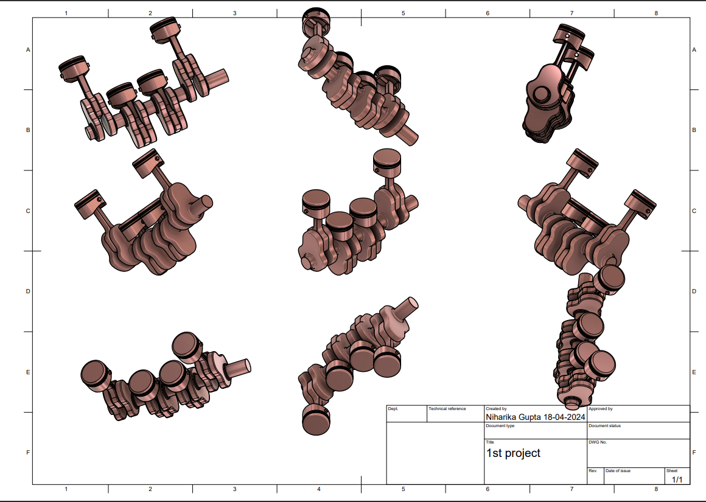

The Second Module Of Our Fablab Was of Computer Aided Design (CAD) Which Includes Understanding Of Designing Softwares Like AutoCad And Fusion 360.
Fusion 360 is a cloud-based 3D modeling software developed by Autodesk. It is commonly used for designing and engineering products, creating simulations, and generating toolpaths for manufacturing processes such as 3D printing, CNC milling, and more. Fusion 360 offers a wide range of features including parametric modeling, assembly modeling, rendering, animation, and collaboration tools. It is popular among designers, engineers, and manufacturers due to its versatility and integrated workflows.
First Of All,We Explored Fusion 360 And Various Tools And Commands In It. We Used Each And Every Command And Tool In Assignment And Mini-Project.
We Practiced Some Of The Mechanical Components By Drawing It And Extracted It Into 3-D Objects. We Used Various Tools Like Line, Rectangle, Circle, etc To Draw All These Engineering drawings.
On The Second Day Of My Journey Into 3D Design, I Delved Into The World Of 2D Design With Fusion 360. This Involved Learning How To Create Intricate 2D Sketches Using The Software's Powerful Sketching Tools. These Tools Allowed Me To Draw Precise Lines, Arcs, And Circles, Laying The Foundation For Creating Complex 3D Models.
On The Third Day Of My Fusion 360 Journey, I Immersed Myself In The Intricacies Of 3D Modeling, Delving Into The Advanced Features Of The Software. I Honed My Skills In Extruding And Learned To Manipulate 3D Objects With Precision And Finesse. With Each Exploration, I Gained A Deeper Understanding Of The Tools And Techniques At My Disposal, And I Felt Myself Improving With Every Minute Of Practice.
From Day Four Until The Submission Deadline, I Dedicated Myself To Working On Three Complex Designs Using Fusion 360. The First Design Was A Bench Vise, A Mechanical Device Used To Hold Workpieces Securely In Place During Machining Or Assembly. This Project Challenged Me To Apply My Knowledge Of Extrusion And 3D Modeling To Create A Functional And Realistic Representation Of A Bench Vise.
